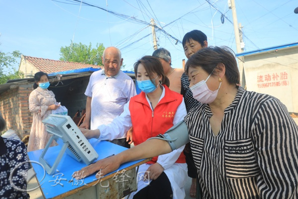

最近，安徽濉溪县依托省域红色资源禀赋，积极发挥“红色基因库”作用，坚持守正创新，打造“小推车”红色文化党员教育品牌，着力用新时代红色文化凝聚人培育人，持续推动党员教育“走新”更“走心”，见行更见效。

丰富红色资源载体，激活党员教育“新引擎”。
强化政策支持。制定《淮北市淮海战役红色资源保护条例》，进一步加大对红色文化资源保护力度。《关于赓续红色基因·传承弘扬小推》深入研究提炼红色资源文化内涵，推动红色文化与旅游、乡村振兴深度融合，续写新时代“小推车”精神，为红色教育阵地建设提供保障。建设淮海战役双堆集战场现场红色旅游、小李家小推车公园、“淮海”追忆”美丽公路、研学食堂等重点项目，将临涣文昌宫、韩村小李家、双堆集烈陵士园等红色资源串点成线，积极打造党员教育“流动风景线”。擦亮红色品牌。小李家红色旅游季、临涣古镇红色旅游文化节等红色节庆活动，聚焦《缅怀革命先烈，传承红色经典》等红色研学优秀文创项目，开展“小推车”故事会、“小推车” “主题文艺作品创作等活动，进一步打响红色文化品牌，不断提升濉溪党员教育红色文化的品牌和影响力。
建设有关红色课堂矩阵，拓展党员教育“新道路”。
打造线上点播课堂。强化教育资源筹措，依托“小推车”红色故事，联合部门收集文物、文字、视频资料，实地走访调研，深入挖掘素材故事，前期拍摄《战火中的推车情》《三十八》等红色党员教育电视剧，结合“红色影视播放季”活动，通过“濉溪先锋”平台、远教平台展播，供党员群众线上点播学习，全方位讲好濉溪“红色故事”。打造线下移动课堂。依托红色文化基地，将红色革命旧址修复为“教室”，红色文物史料改为“教材”、“红色导游” ”近日，“支教教师”，打造了“行走的红色课堂”。支教教师结合自身专长及研究方向，通过微党课、演讲、曲艺等方式，将“小推车”故事传递给广大党员群众。打造交流互学课堂。搭建“小推车论坛”经验交流平台，讲授党的创新理论、分享工作经验、交流学习心得，激励党员干部队伍创业、担当作为，传承“小推车”精神。理论宣讲组、党史专题组、精品教学组等9个红色教学课程组，将历史背景凝练为舞台艺术，推出《小车推出来的成功》等系列情景式互动式“小推车”红色文化精品课程。
提升红色服务质量效，开辟党员教育“新阵地”。
搭建服务平台。建立“小推车精神学教基地”，建立了集党史群众陈列墙、庭院小茶馆、文化大舞台等众多的党员教育基地，并创新“庭院微讲堂”，开展“送思想、送理论、送文明、送文明、送服务”四送活动。打造“小推车”连心服务站，完善软硬件，构建“党建+设施”服务”工作机制，推动党建与服务群众、推动发展的深度融合。组建服务队伍。组建“小推车”连心志愿服务队、“小推车”心连心激励团队，组织党员志愿者、巾帼志愿者、“五老”和“乡贤”等群体参加，结合党建引领网格化治理，常态化走村串巷，积极在田间地头坚持把红色资源当“教学点”，把为民服务当“落脚点”，切实把红色传统发扬好，把红色基因传承好。先锋余领办微小事”活动，发起400余名党员领办群众“微心愿”群众900件，服务1000余人次。通过学教基地“庭院微讲堂”平台，组织党员志愿服务队常态化政策开展宣讲、矛盾辩论、敬老爱幼、入户走访等活动，累计组织开展“红色讲堂”党性教育、基层党员培训、政策理论宣讲等30余场次，覆盖党员群众1500余人次，成功调解矛盾1600次余起，有效提升了“小推车”红色文化党员教育质效。